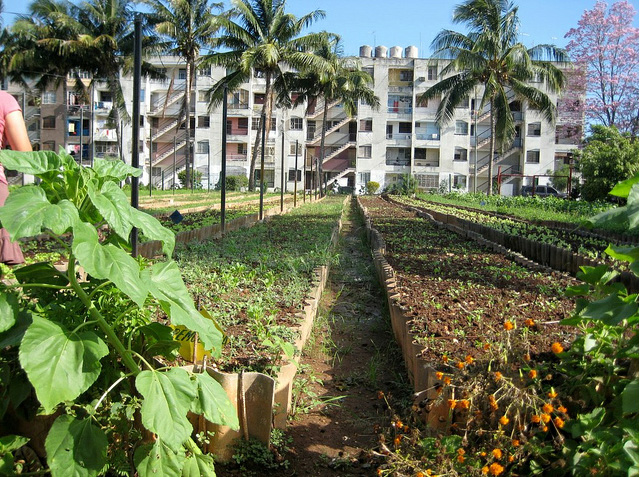

Information Page
Welcome to SDG Indicator's Information Page
Problem
As mentioned in the Home Page, Child Hunger is a problem that should no longer be tolerated in our world.
 Child Hunger as defined by the UN's SDG Goals and this website is the wasting or stunting of children due to malnutrition.
This is especially common in developing countries where most people live in poverty and is quite
unfortunate because the world produces more than enough food to sustain everyone.
The reason child hunger still persists is because 1/3 of the world's food is wasted and this makes food prices unbearingly high for some.
Child Hunger as defined by the UN's SDG Goals and this website is the wasting or stunting of children due to malnutrition.
This is especially common in developing countries where most people live in poverty and is quite
unfortunate because the world produces more than enough food to sustain everyone.
The reason child hunger still persists is because 1/3 of the world's food is wasted and this makes food prices unbearingly high for some.
According to UN estimates and data collection, around 3.1 million children under 5 years of age die every year because of malnutrition. The root of this problem is poverty and people not having enough money to feed themselves and their families, especially in regions such as Sub-Saharan Africa where approximately 1 in every 13 children die before the age of 5. Many people in rural areas try to farm and cultivate their own food, but sometimes disasters such as floods and droughts destroy their hard work and livelihood, leaving them to starve until the next harvest. The reason child hunger is extremely important is because childhood is the time when growth occurs both physically and mentally. Without proper nutrition, children can be stunted, wasted and reduced mental capability. And the worst part is that severe hunger experinced during childhood affects a person throughout their entire lives and can have negative effects on future generations as well.
Here are Some Graphs With Reliable Data of Children Living in Hunger
Solution
A clear solution to this problem is producing more food.  Urban farming that is strictly maintained by the government will produce more food to be sold. This is helpful to people living in hunger and poverty because of a concept in the world's economy known as Supply and Demand. The more Supply there is of an item the less value it has, while the less there is, making the item more rare, the more people will pay for said item. If more food is put out into the market then the price of the food would decrease making it much more affordable for those in poverty. Another way governmentalized urban farming can decrease child hunger is if some of the grown food is donated to hunger and child hunger charities.
Most Affected Regions
As seen in the graphs above the continents with the highest numbers of children living in hunger are Africa and Asia. But this problem does not just affect developing countries but even some of the richest countries in the world such as the United States of America. There is has also been improvement throughout the past decade but some places in Sub Saharan Africa and Eastern Asia exceed 1/3 of children suffering due to hunger. This improvement has to continue at a much faster rate and only when children, the future of the world are properly fed, can we truly and accurately adress the massive problem of world hunger.
What You Can Do Right Now to Help
The time for change is right now. Anyone can help and help comes in many different ways. Some ways YOU can help today include donating food to charities and food drives helping children or going to a reliable child hunger website and giving money because even a small amount can keep a child fed for many days or months. Go to the Contact Page for many sites that will assist you in helping save a child's future today.